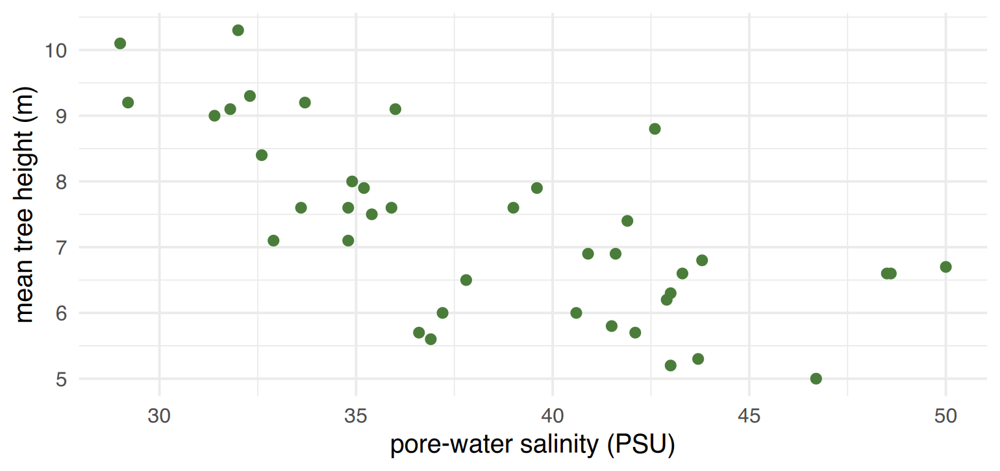
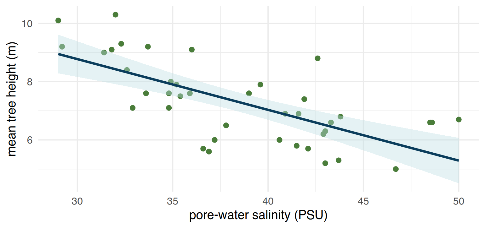
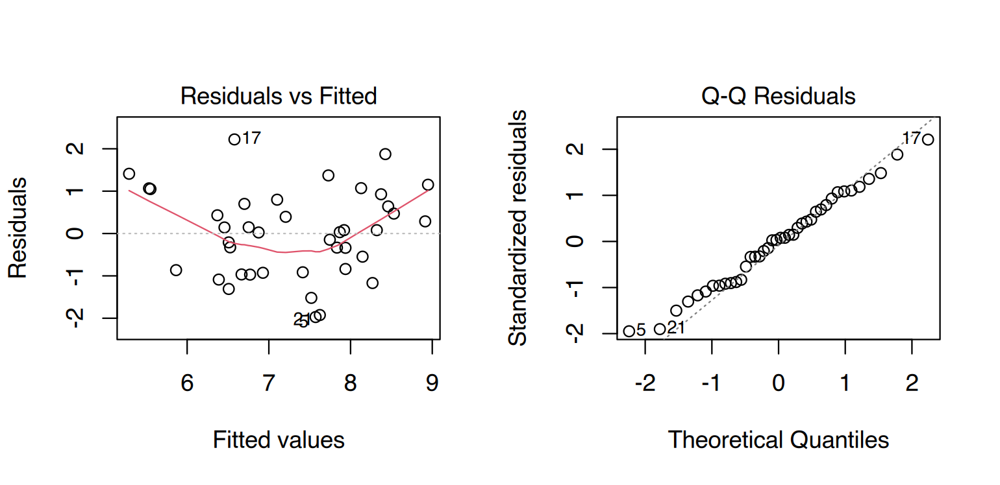

10 · Correlation and
simple linear regression10 · Corrélation et
régression linéaire simple
~3.5 h
By the end of this session you will be able to
describe the relationship between two numeric variables with a
scatterplot and a correlation
coefficient (Pearson r or Spearman ρ), and test it
with cor.test();
explain why correlation is not causation, and how
outliers and restricted ranges distort r;
fit a simple linear regression with
lm(), and interpret the intercept, the
slope and its CI, and R²;
check the regression assumptions with residual
plots;
predict new values with a confidence or prediction
interval, without extrapolating;
interpret a slope on a log-transformed response as
a % change.
À la fin de cette séance vous saurez
décrire la relation entre deux variables numériques avec un
nuage de points et un coefficient de
corrélation (r de Pearson ou ρ de Spearman), et la
tester avec cor.test() ;
expliquer pourquoi corrélation n’est pas causalité,
et comment les valeurs extrêmes et les étendues restreintes faussent
r ;
ajuster une régression linéaire simple avec
lm(), et interpréter l’ordonnée à
l’origine, la pente et son IC, et le
R² ;
vérifier les conditions de la régression avec les graphiques
des résidus ;
prédire de nouvelles valeurs avec un intervalle de
confiance ou de prédiction, sans extrapoler ;
interpréter une pente sur une réponse transformée en
log comme une variation en %.
Mangrove plots (mangrove_plots.csv,
simulated). In 2025, a team placed 40 plots of 10 × 10
m, every 25 m along 4 transects running from
the sea front to the landward edge of a mangrove. In each plot: distance
from the sea front (m), pore-water salinity (refractometer, PSU), mean
tree height (clinometer, m), mean trunk diameter at breast height (DBH,
cm) and number of seedlings. One row = one plot. (Plots of the
same transect are spatially close; for this course we treat them as
independent — the Statistical modelling course shows how to
account for transects.)
Placettes de mangrove
(mangrove_plots.csv, simulé). En 2025, une équipe a placé
40 placettes de 10 × 10 m, tous les 25 m le long de
4 transects allant du front de mer à la limite
terrestre d’une mangrove. Dans chaque placette : distance au front de
mer (m), salinité de l’eau interstitielle (réfractomètre, PSU), hauteur
moyenne des arbres (clinomètre, m), diamètre moyen à hauteur de poitrine
(DHP, cm) et nombre de plantules. Une ligne = une placette.
(Les placettes d’un même transect sont proches dans l’espace ; dans ce
cours nous les traitons comme indépendantes — le cours Modélisation
statistique montre comment tenir compte des transects.)
Pearson’s r measures the strength and direction of a
linear relationship, from −1 (perfect decreasing line)
through 0 (no linear relationship) to +1 (perfect increasing line). It
has no unit and is symmetric (cor(x, y) = cor(y, x)).
Le r de Pearson mesure la force et le sens d’une
relation linéaire, de −1 (droite décroissante parfaite)
à +1 (droite croissante parfaite), en passant par 0 (pas de relation
linéaire). Il est sans unité et symétrique (cor(x, y) = cor(y, x)).
What different values of r look like. r measures LINEAR association only: the last panel has a strong relationship and r ≈ 0.À quoi ressemblent différentes valeurs de r. r ne mesure que l'association LINÉAIRE : le dernier panneau montre une relation forte avec r ≈ 0.
mp <-read.csv("data/mangrove_plots.csv")ggplot(mp, aes(salinity_psu, tree_height_m)) +geom_point(colour ="#4a7d3a", size =2) +labs(x ="pore-water salinity (PSU)", y ="mean tree height (m)") +theme_c()

cor(mp$salinity_psu, mp$tree_height_m)
#> [1] -0.6840544
cor.test(mp$salinity_psu, mp$tree_height_m)
#>
#> Pearson's product-moment correlation
#>
#> data: mp$salinity_psu and mp$tree_height_m
#> t = -5.7809, df = 38, p-value = 1.137e-06
#> alternative hypothesis: true correlation is not equal to 0
#> 95 percent confidence interval:
#> -0.8206846 -0.4734274
#> sample estimates:
#> cor
#> -0.6840544
ignore les paires avec des NA (sinon le résultat est
NA)
cor.test(x, y, method, exact)
teste H0 : corrélation = 0 ; donne l’IC de r (Pearson)
Spearman’s ρ is Pearson’s r computed on the
ranks: it measures a monotonic
relationship (always increasing or always decreasing, not necessarily
straight) and resists outliers. Use it for counts with many small
values, ordinal variables, or curved but monotonic relationships —
e.g. seedling counts:
Le ρ de Spearman est le r de Pearson calculé sur les
rangs : il mesure une relation
monotone (toujours croissante ou toujours décroissante,
pas forcément droite) et résiste aux valeurs extrêmes. Utilisez-le pour
des comptages avec beaucoup de petites valeurs, des variables ordinales,
ou des relations courbes mais monotones — ex. les comptages de plantules
:
#>
#> Spearman's rank correlation rho
#>
#> data: mp$salinity_psu and mp$seedlings
#> S = 16475, p-value = 0.000272
#> alternative hypothesis: true rho is not equal to 0
#> sample estimates:
#> rho
#> -0.5455343
Four traps. (1) Causation: salinity
and height are correlated, but both also change with distance from the
sea; a correlation alone does not tell which causes which. (2)
Outliers can create or hide a correlation (Anscombe,
Session 3) — always plot. (3) Restricted range:
sampling only the seaward 50 m would show a much weaker correlation. (4)
Non-linear relationships can have r ≈ 0.
Quatre pièges. (1) Causalité :
salinité et hauteur sont corrélées, mais toutes deux changent aussi avec
la distance à la mer ; une corrélation seule ne dit pas qui cause quoi.
(2) Les valeurs extrêmes peuvent créer ou cacher une
corrélation (Anscombe, séance 3) — tracez toujours. (3) Étendue
restreinte : échantillonner seulement les 50 m côté mer
montrerait une corrélation bien plus faible. (4) Les relations
non linéaires peuvent avoir r ≈ 0.
Simple linear regressionRégression linéaire simple
Correlation says “how strongly”; regression says
“by how much”: how much does tree height change per PSU
of salinity? It fits the straight line
height = β₀ + β₁ × salinity + error
that minimises the sum of squared vertical distances between points
and line (least squares). Unlike correlation,
regression is not symmetric: y is the
response, x the predictor.
La corrélation dit « avec quelle force » ; la
régression dit « de combien » : de
combien la hauteur des arbres change-t-elle par PSU de salinité ? Elle
ajuste la droite
hauteur = β₀ + β₁ × salinité + erreur
qui minimise la somme des carrés des distances verticales entre les
points et la droite (moindres carrés). Contrairement à
la corrélation, la régression n’est pas symétrique : y
est la réponse, x le prédicteur.
fit <-lm(tree_height_m ~ salinity_psu, data = mp)summary(fit)
#>
#> Call:
#> lm(formula = tree_height_m ~ salinity_psu, data = mp)
#>
#> Residuals:
#> Min 1Q Median 3Q Max
#> -1.97198 -0.87731 0.05537 0.72392 2.22104
#>
#> Coefficients:
#> Estimate Std. Error t value Pr(>|t|)
#> (Intercept) 14.00050 1.16951 11.971 1.83e-14 ***
#> salinity_psu -0.17421 0.03014 -5.781 1.14e-06 ***
#> ---
#> Signif. codes: 0 '***' 0.001 '**' 0.01 '*' 0.05 '.' 0.1 ' ' 1
#>
#> Residual standard error: 1.026 on 38 degrees of freedom
#> Multiple R-squared: 0.4679, Adjusted R-squared: 0.4539
#> F-statistic: 33.42 on 1 and 38 DF, p-value: 1.137e-06
coefficients with SE, t and p-values, residual SE, R², F test
confint(fit, level)
confidence intervals of the coefficients
coef(fit)
the estimated coefficients β₀ and β₁
Fonctions et arguments utilisés ici
Fonction / argument
Ce qu’il fait
Valeur attendue
lm(formula, data)
ajuste un modèle linéaire par moindres carrés
formula
réponse ~ prédicteur
noms de colonnes
summary(fit)
coefficients avec ES, t et p-values, ES résiduelle, R², test F
confint(fit, level)
intervalles de confiance des coefficients
coef(fit)
les coefficients estimés β₀ et β₁
Anatomy of a simple linear regression: the slope is the change in y for +1 unit of x; residuals are the vertical distances from the points to the line.Anatomie d'une régression linéaire simple : la pente est la variation de y pour +1 unité de x ; les résidus sont les distances verticales des points à la droite.
Reading summary(fit):
(Intercept) β₀ = 14 m: predicted height at salinity
0 — outside the data (salinities about 29–50), so it
has no ecological meaning here; it just positions the line.
salinity_psu β₁ = -0.174: each extra PSU of salinity is
associated with trees 0.17 m shorter on average (95 %
CI -0.24 to -0.11). The p-value tests H0: β₁ = 0 (no linear
relationship); with one predictor it equals the p-value of
cor.test().
Residual standard error (1.03 m): typical distance of
the points to the line.
Multiple R-squared = 0.47: salinity “explains” 47 % of
the variance of height. With one predictor, R² = r².
Lecture de summary(fit) :
(Intercept) β₀ = 14 m : hauteur prédite pour une
salinité 0 — hors des données (salinités d’environ
29–50), elle n’a donc pas de sens écologique ici ; elle positionne
seulement la droite.
salinity_psu β₁ = -0.174 : chaque PSU de salinité en
plus est associé à des arbres plus petits de 0.17 m en
moyenne (IC 95 % -0.24 à -0.11). La p-value teste H0 : β₁ = 0 (pas de
relation linéaire) ; avec un seul prédicteur, elle est égale à celle de
cor.test().
Residual standard error (1.03 m) : distance typique des
points à la droite.
Multiple R-squared = 0.47 : la salinité « explique » 47
% de la variance de la hauteur. Avec un seul prédicteur, R² = r².
ggplot(mp, aes(salinity_psu, tree_height_m)) +geom_point(colour ="#4a7d3a", size =2) +geom_smooth(method ="lm", formula = y ~ x, colour ="#0b3d5c", fill ="#bfdfe4") +labs(x ="pore-water salinity (PSU)", y ="mean tree height (m)") +theme_c()

Checking the assumptions: residualsVérifier les conditions : les résidus
Like ANOVA (which is in fact a linear model), regression assumes: (1)
independent observations; (2) a linear
relationship; (3) constant spread of residuals along
the line; (4) roughly normal residuals (least important
with large n). Check (2)–(4) on the residual plots:
Comme l’ANOVA (qui est en fait un modèle linéaire), la régression
suppose : (1) des observations indépendantes ; (2) une
relation linéaire ; (3) une dispersion
constante des résidus le long de la droite ; (4) des
résidus à peu près normaux (le moins important avec un
grand n). Vérifiez (2)–(4) sur les graphiques des résidus :
par(mfrow =c(1, 2))plot(fit, which =1) # residuals vs fitted: no curve, no funnelplot(fit, which =2) # QQ plot of residuals

par(mfrow =c(1, 1))
Pattern in “Residuals vs Fitted”
Problem
What to do
a curve (U or ∩)
relationship not linear
transform x or y, add a curve (Modelling course)
a funnel (spread grows with fitted values)
non-constant variance
log-transform y (often fixes both skew and funnel)
one point far away
outlier / influential point
check it; report results with and without
Here: no pattern, residuals close to the QQ line → the model is
adequate.
Motif dans « Residuals vs Fitted »
Problème
Que faire
une courbe (U ou ∩)
relation non linéaire
transformer x ou y, ajouter une courbe (cours
Modélisation)
un entonnoir (la dispersion augmente avec les
valeurs ajustées)
variance non constante
log-transformer y (corrige souvent asymétrie et entonnoir)
un point très éloigné
valeur extrême / point influent
le vérifier ; donner les résultats avec et sans
Ici : pas de motif, résidus proches de la droite du QQ plot → le
modèle convient.
PredictionPrédiction
predict() gives the fitted height for new salinities,
with two kinds of interval:
confidence interval
(interval = "confidence"): where the mean
height of all plots at that salinity lies — narrow;
prediction interval
(interval = "prediction"): where one new
plot will probably fall — wide, because it adds the scatter of
individual plots.
predict() donne la hauteur ajustée pour de nouvelles
salinités, avec deux sortes d’intervalle :
intervalle de confiance
(interval = "confidence") : où se trouve la hauteur
moyenne de toutes les placettes à cette salinité —
étroit ;
intervalle de prédiction
(interval = "prediction") : où tombera probablement
une nouvelle placette — large, car il ajoute la
dispersion des placettes individuelles.
new <-data.frame(salinity_psu =c(35, 45))predict(fit, newdata = new, interval ="confidence")
a data frame with a column named exactly like the
predictor
a data frame
interval
"none", "confidence" (mean) or
"prediction" (one new observation)
Fonctions et arguments utilisés ici
Fonction / argument
Ce qu’il fait
Valeur attendue
predict(fit, newdata, interval, level)
valeurs prédites d’un modèle pour de nouvelles valeurs de x
newdata
un data frame avec une colonne nommée exactement comme le
prédicteur
un data frame
interval
"none", "confidence" (moyenne) ou
"prediction" (une nouvelle observation)
Do not extrapolate. The data cover salinities of
about 29–50 PSU. Predicting at 100 PSU would give a negative height: the
straight line is only a good description within the
observed range.
N’extrapolez pas. Les données couvrent des salinités
d’environ 29–50 PSU. Prédire à 100 PSU donnerait une hauteur négative :
la droite n’est une bonne description qu’à l’intérieur
de l’étendue observée.
A log-transformed response: fish biomass and coral
coverUne réponse transformée en log : biomasse
de poissons et corail
Fish biomass is right-skewed and its spread grows with its level
(Sessions 2–3). Regressing log(biomass) on coral cover
often gives straight, evenly spread residuals. The slope then means a
proportional change: each extra % of coral multiplies
biomass by exp(β₁), i.e. a change of 100 × (exp(β₁) − 1) %.
La biomasse de poissons est asymétrique à droite et sa dispersion
augmente avec son niveau (séances 2–3). Régresser
log(biomasse) sur le recouvrement corallien donne
souvent des résidus alignés et de dispersion régulière. La pente
signifie alors une variation proportionnelle : chaque %
de corail en plus multiplie la biomasse par exp(β₁), soit une variation
de 100 × (exp(β₁) − 1) %.
rf <-read.csv("data/reef_fish_sites.csv")fit_rf <-lm(log(biomass_kg_ha) ~ coral_cover, data = rf)coef(fit_rf)
#> (Intercept) coral_cover
#> 4.5244534 0.0446862
100* (exp(coef(fit_rf)[2]) -1) # % change in biomass per +1 % coral
#> coral_cover
#> 4.569967
100* (exp(confint(fit_rf)[2, ]) -1)
#> 2.5 % 97.5 %
#> 2.474057 6.708744
summary(fit_rf)$r.squared
#> [1] 0.3717457
Each extra percentage point of coral cover is associated with about
4.6 % more fish biomass. But R² is only 0.37, and management (Session 8)
is also related to both coral and fish: to separate them we need a model
with several predictors — the starting point of the
Statistical modelling with R course.
Chaque point de pourcentage de corail en plus est associé à environ
4.6 % de biomasse de poissons en plus. Mais le R² n’est que de 0.37, et
la gestion (séance 8) est aussi liée au corail et aux poissons : pour
les séparer il faut un modèle à plusieurs prédicteurs —
le point de départ du cours Modélisation statistique avec
R.
Application work & quizTravail d’application et quiz
Application work 10
With mangrove_plots.csv:
Pearson correlation between tree height and
DBH (3 decimals).
Spearman correlation between distance and
seedlings (3 decimals).
– 5. Regression lm(dbh_cm ~ tree_height_m): slope (3
decimals), lower limit of its 95 % CI (3 decimals), R² (3
decimals).
– 7. Predicted DBH for a tree height of 8 m (2
decimals), and the upper limit of the 95 %
prediction interval (2 decimals).
Regression lm(salinity_psu ~ distance_m): by how many
PSU does salinity increase per 100 m inland (2
decimals)?
– 10. Interpretation.
Travail d’application 10
Avec mangrove_plots.csv :
Corrélation de Pearson entre hauteur des arbres et
DHP (3 décimales).
Corrélation de Spearman entre distance et
plantules (3 décimales).
– 5. Régression lm(dbh_cm ~ tree_height_m) : pente (3
décimales), limite inférieure de son IC à 95 % (3 décimales), R² (3
décimales).
– 7. DHP prédit pour une hauteur d’arbre de 8 m (2
décimales), et la limite supérieure de l’intervalle de
prédiction à 95 % (2 décimales).
Régression lm(salinity_psu ~ distance_m) : de combien
de PSU la salinité augmente-t-elle tous les 100 m vers
l’intérieur (2 décimales) ?
– 10. Interprétation.
Q2: cor(x, y, method = "spearman"). Q6–7:
predict(fit, data.frame(tree_height_m = 8), interval = "prediction").
Q8: the slope is per metre; multiply by 100.
Q2 : cor(x, y, method = "spearman"). Q6–7 :
predict(fit, data.frame(tree_height_m = 8), interval = "prediction").
Q8 : la pente est par mètre ; multipliez par 100.